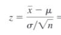

z-statistic
The z-statistic, also known as the z-score, is a measure that quantifies how many standard deviations a particular data point is from the mean in a normal distribution. It is often used in statistics for estimating population parameters, such as the population mean, when you have a sample from that population.
\(Z = \frac{\bar X - \mu}{SE(\bar X)}\)
For Single Mean
\(SE(\bar X) = \frac{\sigma|s}{\sqrt n}\)
For Two Mean
- When \(\sigma\) is know
\(SE(\bar X) = \sigma \sqrt{\frac{1}{n_1} + \frac{1}{n_2}}\) - When \(\sigma\) is unknown
- when \(s_1 = s_2\)
\(SE(\bar X) = \sqrt{\frac{s_1^2}{n_2} + \frac{s_2^2}{n_1}}\) - when \(s_1 \ne s_2\)
\(SE(\bar X) = \sqrt{\frac{s_1^2}{n_1} + \frac{s_2^2}{n_2}}\)
- when \(s_1 = s_2\)
Hypothesis testing
Null Hypothesis \(H_0: \mu = k\)
Two Tailed
Alternate Hypothesis \(H_{\alpha} : \mu \ne k\)
using z-critical:
find \(Z_{\alpha/2}\) from the
table
if \(|Z| \ge Z_{\alpha/2}\) then
reject null hypothesis
else accept null hypothesis
using p value:
if \(\text{p-value} = 2(p(z \le -|Z|)) \ge \alpha\) then
accept null hypothesis
else accept \(H_{\alpha}\) hypothesis
Single Tailed
Alternate Hypothesis \(H_{\alpha} : \mu \gt k\)
using z-critical:
find \(Z_{\alpha}\) from the table
if \(|Z| \ge Z_{\alpha}\) then
reject null hypothesis
else accept \(H_{\alpha}\) hypothesis
using p value:
if \(pvalue = p(z \le -|Z|) \ge \alpha\) then
accept null hypothesis
else accept \(\)\(H_{\alpha}\) hypothesis
Confidence Interval
\(\bar X \pm Z_{\alpha/2} SE(\bar X)\)
Terms
\(Z = standerd \space normal \space value(z-score)\)
\(\mu = population \space mean\)
\(\sigma = population \space sd\)
\(\bar X = sample \space mean\)
\(s = sample \space sd\)
\(n = sample \space size\)
\(sd = standered \space deviation\)
\(\alpha = level \space of \space significance\)
Type 2 error prob: 